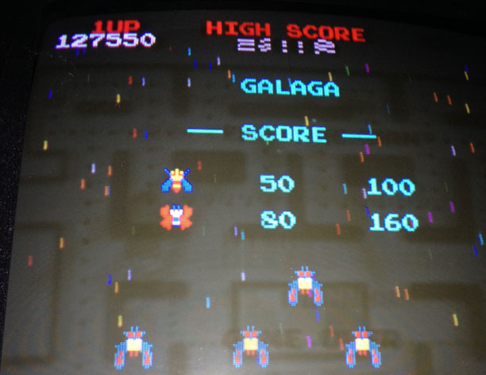
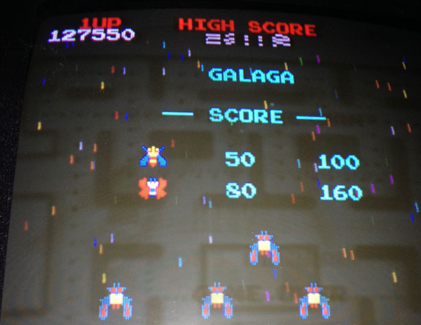
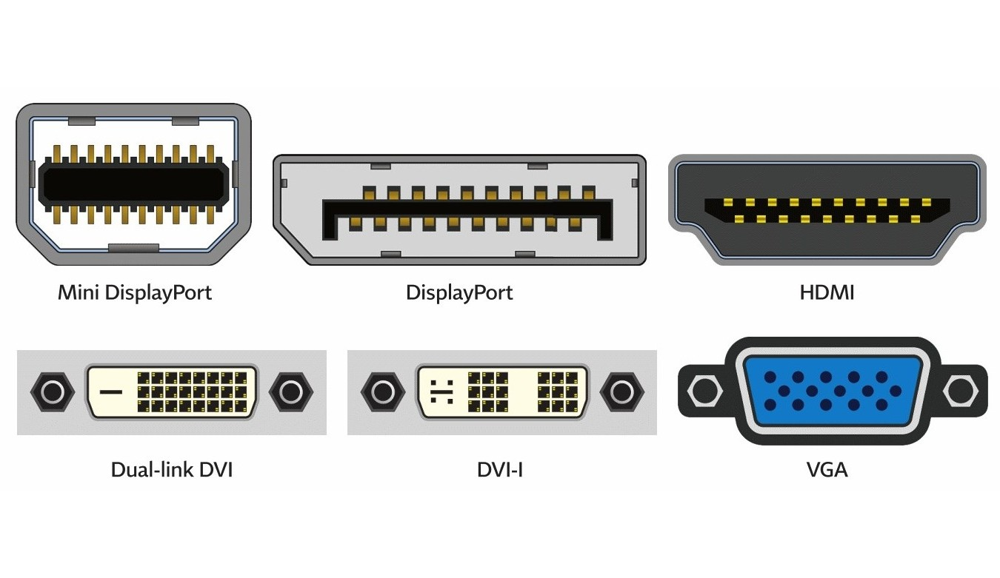
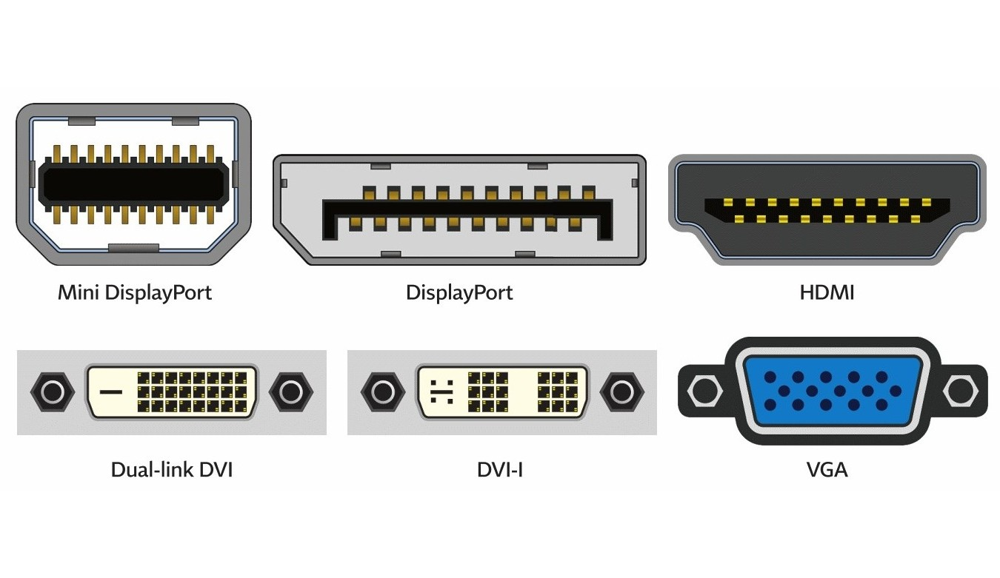
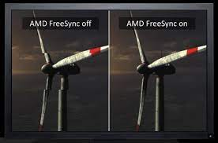
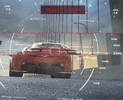
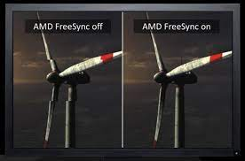
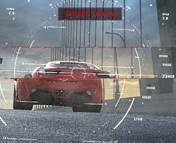
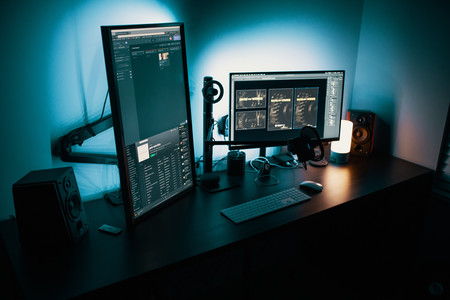
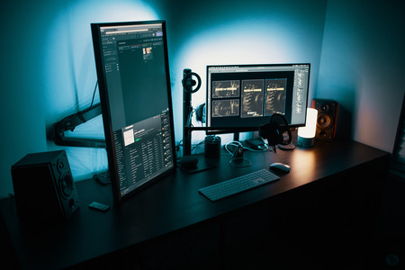

LOS MONITORES
Dmitriy T
El contenido se centrara sobre todo en el funcionamiento de las pantallas y en crear una idea a la hora de elegir una para una PC de sobre mesa. Veremos una cronológia de los monitores, tecnologias actuales de las pantallas, diferentes características técnicas a tener en cuenta (resolución, conectores y frecuencia), por último los tipos de monitores que hay; todo esto para poder ver 3 casos prácticos de monitores.
Antes de que existiesen los monitores, se interactuaba con una computadora con unas luces que se encendían o se apagaban en función de la memoria accionada o instrucción ejecutada. En los 60 la manera de interactuar con un computador era mediante un teletipo, que se conectaba directamente a este e imprimía todos los datos de una sesión informática.
En los 70 aparecieron los primeros monitores de CRT (tubo de rayos catódicos), que proyectaba varios haces de rayos a una pantalla de vidrio recubierta de fósforo para reproducir la imagen proveniente del haz de rayos que iban construyendo la imagen, mientras que el plomo bloquea los rayos X para proteger al usuario de sus radiaciones.
Por ejemplo el estándar MDA de IBM:
En 1981 salieron los monitores CGA, desarrollándose la primera tarjeta gráfica. Salio a la vez que los MDA los usuarios de PC optan por comprar el monitor monocromático por su costo.
En 1984 surgió el monitor EGA (Enhanced Graphics Adapter - adaptador de gráficos mejorados) estándar desarrollado por IBM para la visualización de gráficos, este monitor aportaba 16 colores y una resolución de hasta 640×350 píxeles. La tarjeta gráfica EGA estándar traían 64 KB.
En 1987 surgió el estándar VGA (Matriz gráfica de video), que hizo absoletos a los demás modelos. El VGA incorporaba hasta 256 colores. Las tarjetas gráficas VGA estándares incorporaban 256 KB de memoria de vídeo.
En 1989 se desarrolló el SVGA (Super VGA), soportaba 16 millones de colores y resoluciones de 1024x768 píxeles y superiores, y tarjetas gráficas de fabricantes como NVIDIA o ATI.
Antes del 2010 el formato de pantalla más común era de 4:3, actualmente el más utilizado es el 16:9.
 


Los protectores de pantalla fueron creados el 1983 por John Socha, con el fin de proteger la pantalla del desgaste que sufría al quedar fija la misma imagen a un punto durante mucho tiempo, dando lugar a un desgaste muy común en las pantallas CRT (BURN IN). Solia pasar mucho con personas que jugaba mucho al Pac Man.
Con el rumor de que los CRT podían producir un cáncer y sumada a su desventaja de tener una baja actualización de la imagen en pantalla (normalmente 40-50 fps) que causaba parpadeos; empezó a verse reemplazada por otro tipo de tecnología como puede ser la LCD y la PLASMA.
LCD (pantalla de cristal líquido) utiliza millones de píxeles con subpíxeles RGB, iluminados por LED. La luz atraviesa filtros polarizadores y cristales que cambian su orientación con el voltaje. Después, pasa por un segundo filtro y adopta el color de subpixel para crear colores según la intensidad de cada uno.
PLASMA: Su funcionamiento es similar a los televisores CRT tradicionales al usar fósforos que generan la luz. Están compuestos por paneles de cristal divididos en celdas y que incluyen mezcla de gases nobles que, cuando entran en contacto con la electricidad, se convierten en plasma y los fósforos emiten luz.
LED: funciona con diodos de tamaños muy pequeños; normalmente son 3 diodos rgb que conforman un pixel o hay casos de de 4 diodos para conformar un pixel (2 de ellos de color rojo para conseguir un rojo más brillante). Los leds tienen un hueco entre uno y otro, que es el pitch.
La IPS es una tecnología complementaria a la LCD, que se utiliza para mejorar la calidad de la imagen y el ángulo de visión de la pantalla. Funciona al alinear las moléculas de cristal líquido de la pantalla en un plano paralelo al panel.
QLED utilizan puntos cuánticos, diminutas partículas de semiconductores, en su tecnología. Estos puntos cuánticos absorben luz blanca de una fuente como retroiluminación LED y emiten luz de un color específico según su tamaño. Esta luz coloreada luego pasa a través de una capa LCD, controlando la luz que pasa.
ULED: Son una evolución de las QLED, en la que LEDs colocados de forma estratégica detrás del panel para proporcionar un control preciso de la iluminación. Esta tecnología utiliza algoritmos avanzados y zonas de atenuación local para lograr niveles de negro más profundos y colores más vibrantes. La combinación de la retroiluminación LED y el control de atenuación local en los televisores ULED permite una calidad de imagen mejorada con un alto contraste y una reproducción del color mejorada.
Las OLED prescinde de la retroiluminación tradicional. Cada píxel emite luz de forma individual y puede apagarse por completo cuando es necesario, lo que resulta en negros puros y una relación de contraste infinita, ofreciendo una experiencia visual más inmersiva y detallada.
AMOLED: Son una variante de las pantallas OLED que utiliza una matriz activa que se encuentra detrás de los píxeles, que consiste en transistores de película delgada para cada píxel. Esto permite un control más preciso sobre cada píxel y una mayor velocidad de respuesta.
CARACTERÍSTICAS |
LED |
IPS |
QLED |
OLED |
AMOLED |
ULED |
PRECIO |
Económico ★ |
Moderado |
Elevado |
El más Elevado |
Muy Elevado |
Muy Elevado |
ÁNGULOS DE VISIÓN |
Bueno |
Muy bueno |
Bueno |
Excelente★ |
Excelente★ |
Bueno |
BRILLO |
Bueno |
Bueno |
Muy Bueno |
Excelente★ |
Excelente★ |
Excelente |
CONSUMO |
Bajo ★ |
Moderado |
Moderado |
Moderado |
Bajo ★ |
Moderado |
CONTRASTE (como se ve el negro) |
Bueno |
Bueno |
Muy Bueno |
Excelente★ |
Excelente★ |
Muy bueno |
DURABILIDAD |
Buena |
Muy Buena★ |
Buena |
Variable |
Variable |
Buena |
TIEMPO DE RESPUESTA |
Buena |
Excelente |
Excelente |
Excelente★ |
Excelente★ |
Excelente |
 

HDMI, VGA, Displayport, DVI y Thunderbolt 3 en USB-C
La resolución máxima de los HDMI normales es hasta los 1080p y su versión 2.0 es de 4k, mientras que los Displayport soporta incluso hasta los 8k; el HDMI fue estandarizado y es por eso que es el que más se utiliza a pesar de transmitir a menores calidades que el Displayport.
El estándar Thunderbolt 3 utiliza un puerto USB-C, ofrece un ancho de banda de 10 Gbit/s, y puede proporcionar una resolución de vídeo 5K o Dual 4K a 60 Hz.
 



Tecnología de sincronización adaptativa o de fotogramas síncronos:
Ciertos monitores pueden reproducir mejor la imagen con ciertas gráficas y otras la soportan peor; normalmente entre AMD y NVIDIA dependiendo del motor que utilizan respectivamente son: FreeSync y G-SYNC. Esto puede influir también en los FPS que reproducen la pantalla, siendo importante en los juegos competitivos. Básicamente es el software que regula la velocidad con la que se mandan los frames de una tarjeta gráfica al monitor, evitando el Microstuttering y el Screen Tearing, que respectivamente surge al haber una bajada o subida de generación de imágenes por la gráfica que tiene que recibir la pantalla.
G-SYNC implementa más características que mejoran la experiencia en juegos competitivos como puede ser el Overdrive (evita el ghosting y rastros de quemazones en la pantalla, influyendo en la nitidez de la imagen), también está el ULMB que reduce el desenfoque de movimiento de la pantalla para evitar la reducción de calidad de imagen en videojuegos donde hay movimiento (juegos de conducción) o giros bruscos (shooters o FPS).
 

Ultrawide
Las pantallas ultrawide ofrecen una experiencia visual inmersiva gracias a su amplio formato, que supera los estándares tradicionales. Con una relación de aspecto panorámica, estas pantallas son ideales para entusiastas de los videojuegos, diseñadores gráficos y usuarios que buscan aumentar su productividad al tener múltiples aplicaciones abiertas simultáneamente.
Curvos
Sensación envolvente al usuario al envolver ligeramente el campo visual. Inspiradas en la curvatura natural del ojo humano, estas pantallas brindan una experiencia más inmersiva al mejorar la percepción de profundidad y reducir la distorsión en los bordes. Ideal para juegos y visualización de contenido multimedia.


La elección de una pantalla al final se basa sobretodo en las necesidades de cada uno, es por esto que lo más importante a tener en cuenta son las funcionalidades, las ventajas que ofrece cada tecnología, el presupuesto, y de como sería su utilidad en general.